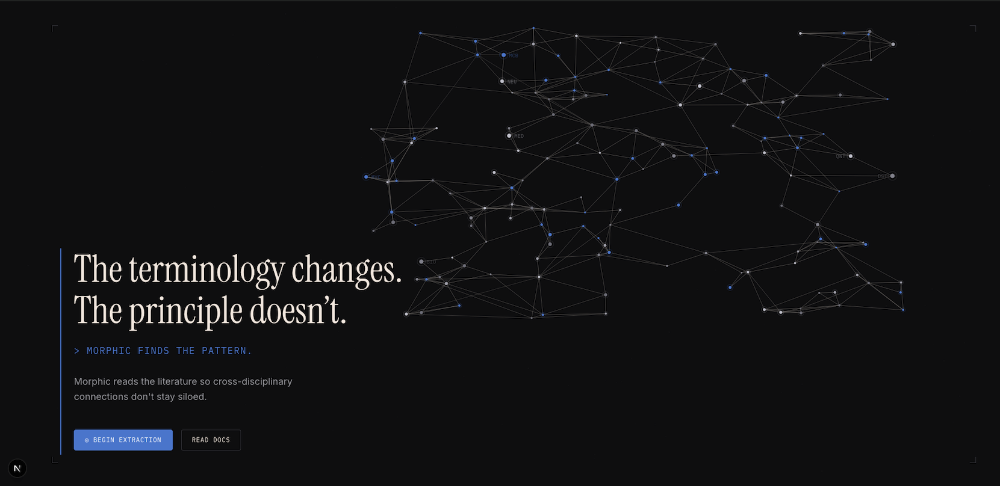

About
As a deeply curious-yet-practical person, I find great satisfaction in employing my skills to solve problems that actually need solutions. Being able to effectively communicate complex ideas means understanding what the other person needs to know, and being able to speak their language. This is a skill, maybe even an art, that I have intentionally cultivated throughout my life, and I hope you'll find it demonstrated in my portfolio projects and writing.
My portfolio consists of projects that I created because I needed them to exist:
- I built Noeron because I wanted to remove the friction between consuming scientific podcasts and validating the claims being made.
- While shopping for a new house, I found the existing platforms didn't provide the data I needed to make an informed decision, so I built St. Pete Analytics.
Projects

Noeron
Built a knowledge layer for podcasts. The platform detects scientific claims made in an episode, then validates those claims by examining the academic literature.
View case study →
Morphic
Built a cross-domain research engine that extracts structural patterns from a 150+ paper corpus and routes them to autonomous domain-specialist agents (mycology, medicine, distributed computing) that synthesize insights no single field could reach.
View case study →
Critical Minerals Intelligence
Designed a geopolitical analysis platform with interactive mapping, automated news monitoring, and HHI-based supply chain risk scoring.

St. Pete Housing Analytics
Built a parcel-level housing market analytics platform for St. Petersburg, FL. It ingests county assessor, Census, and FEMA data into DuckDB/dbt to derive true monthly cost, flip detection, and rental-yield metrics unavailable in Zillow or Redfin.
View case study →Activity
Loading GitHub activity…
Writing
Contact
If you'd like to explore how I can help your team, let's connect.